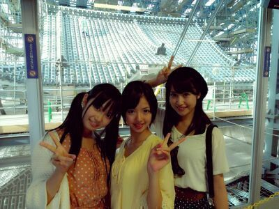
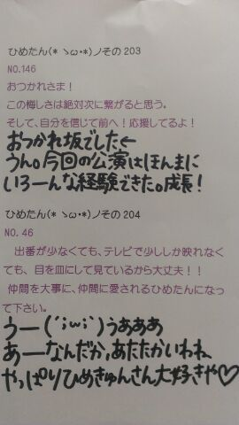

| 2012/09 28 Fri | ひめたん(*ゝω・*) ノその211 |
久しぶりの更新ごめんなさい←
ひめたんは元気ですよ(*^ω^*)
なんかね、私生活がバタバタしてて
ブログ書こうと思って寝て、
ブログ書きながら寝て、
気づけばもう週末(´・ω・`)ちーん
あああほんとにごめんなさい！

よし。元気だった証拠に
この１週間て起こったことを
箇条書きにしてまとめてみよお。
◎妹が最近料理を振る舞ってくれる
◎学校行事が一段落した
◎都民の日があることを知った
◎個握の服で悩んでみた
◎平泳ぎの泳法をなんとなく理解した
◎秋になった！寒いのやー(°Д°)
◎ホットミルクうまうま
◎あったかいお布団にした
◎近々衣替えする予定
◎友達がひめたんびーむツボらしい
◎学校帰りに遠回りしてウォーキング
◎普段の髪型ストレート率あっぷした
うおー懐かしい。
イオンツアーからもう１ヶ月経つんかー
姫路城＼(^^)／うきゃら

 名古屋で食べてみたいものは何かな？
名古屋で食べてみたいものは何かな？
手羽先は食べたことある
みそカツは食べたことある
ういろうは食べたことある
...あと何食べれば制覇できるー(^^)？
松茸好き？
キノコ類はねー、
別に好きじゃないけど食べれるレベル←
ごめんね松茸さん(´・ω・｀)
体調は万全ですか？
もう元気っ\(｀・ω・´)/
ありがとうお！
制服の上にはベスト派？カーデガン派？
カーディガン派かなあー☆
長袖の包容力は素敵。
冷房苦手ってのもある。
この間の陸上の大会で準優勝しました。誉めてくだしゃい(笑)
おーいえあ。おめでとーう！
陸上で準優勝なんて。ひめたんは運動会でいい思い出いっこもないぞー
ひめたんは大阪に来たらやりたいこととかある？
久々にユニバ行きたい！
メンバーさんみんなとユニバ行きたい！
あとはネギ焼きをこの前食べたのね
あれは美味しかったーよ∩^ω^∩
ヘルシーそうだしね。また食べたーいー
次回握手会があって、ひめんたんのとこに行くとき広島弁で話したら広島弁で返してくれる？
話そ話そーう
そろそろ広島弁が恋しくなってきたの
地元のみんなとお話したいなー...
ひめたんはどう思うかな？乙女座男子。
乙女座男子。
ひめたんのぱぱも乙女座男子よ＼(^^)／
かわいーいじゃないの///
ひめたんも乙女座ーとかゆってみたいー
牡羊座もかわいいでしょー？
ひめたんは、夏休みの宿題はちゃんと終わりましたか？
終わった(・∀・)！
提出期限はきちんと守るってゆったでしょー
ひめたんはできる子＊＊
いーこいーこしてー
ひめきゅんさんってひめたんファンのことー？
ひめたんにきゅんってした人
いわゆるひめたんふぁんのみなさんのことでーす(//ω//)
ねーひめきゅんさーん♪
いつでも仲間入りしてくださいな。
けっこー昔のブログで運動は苦手とかって言ってたけど今はどーなん？
相変わらず苦手よ。
生まれつき運動苦手な体なのよ多分。
ちっちゃい頃はめちゃ嫌だったけど
最近は別にいっかーってなる(^^)
運動できんでも他でカバーしてやるわー


(＊´・ω・)ひめたん
コメント(148)
2012/09/28 21:06